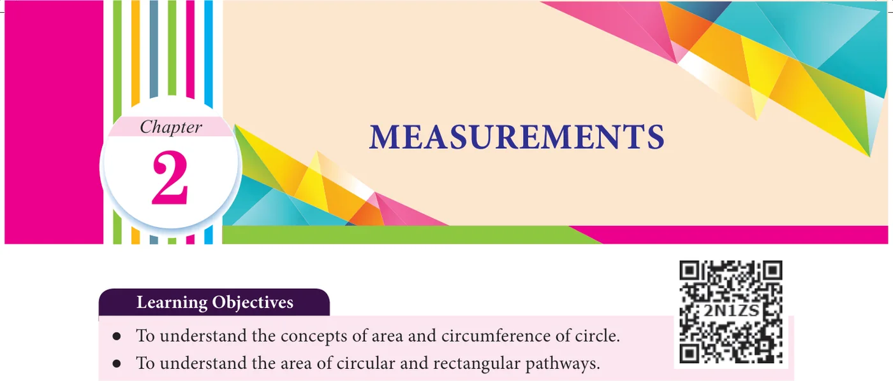
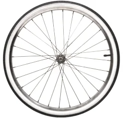
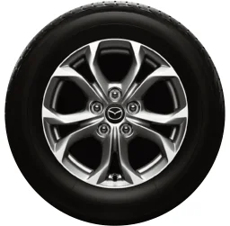
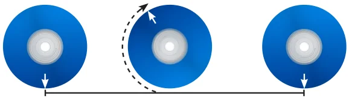
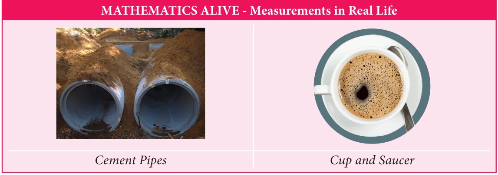

We have already studied that closed shapes such as rectangle and square having area and perimeter. Pasting of tiles on a wall, paving a parking lot with stones, fencing a field or ground etc., are some of the places where the knowledge of area and perimeter of rectangle are essential. In this chapter, we extend this concept to circles. The best example of a circle is the wheel. The invention of wheel is perhaps the greatest achievement of mankind.
The teacher shows the following pictures of wheel and asks questions as given below:


Teacher : Bharath, can you tell me what is the name of the picture given in Fig 2.1? Bharath : Yes Sir/Madam, wheel of a bicycle. Teacher : Sathish, would you tell me what is in Fig.2.2? Sathish : Yes Sir/Madam, it is a wheel of a car. Teacher : Suresh, will you name the shape of both figures? Suresh : Yes Sir/Madam, they are circular in shape. Teacher : Yes, you are right. Now Mary, will you tell me the distance covered by the wheel when it rotates once. Mary : I don't know sir/madam. Teacher : Ok, How do we measure the distance around the circle? We cannot measure the curves with the help of a ruler, as these shapes do not have straight edges. But there is a way to measure the distance around the circle. Mark a point on its boundary. Place the wheel on the floor in such a way that the marked point coincides with the floor. Take it as the initial point. Rotate the wheel once on
the floor along a straight line till the marked point again touches the floor. The distance covered by it is the distance around the outer edge of a circle. That is,

circumference. Fig. 2.3 Suresh : Teacher, is there any other way to find the distance? Teacher : Yes, mark a point on its boundary and using a thread and scale we can measure its length. We are now going to discuss the circumference and area of the circle.

Circle
In our daily life, we come across circular shapes in various places. For understanding of circular shapes, first let us see how to trace a circle through an activity.
Put a pin on a board, put a loop of string around it, and insert a pencil into the loop. Keep the string stretched and draw with the pencil. The pencil traces out a circle. What happens if we change the position of the pin? Do we get the same circle or a different circle? Can we make the string longer? Do we get a circle of the same size? Can we change the pencil to a pen? What happens to the circle? Yes, changing the pen to pencil or sketch pen will only change the colour of the circle but changing the position of the pin and length of the string will change the place where the circle is drawn and also the size of the circle. These two quantities namely, the position of the pin and the length of the string are important to specify the circle. The position of the pin on the board is the centre (O) string is the radius (r) of the circle. While tracing a circle, the two positions of the string which falls on a straight line is the diameter (d) of the circle. It is twice the radius (d \(= 2r)\).